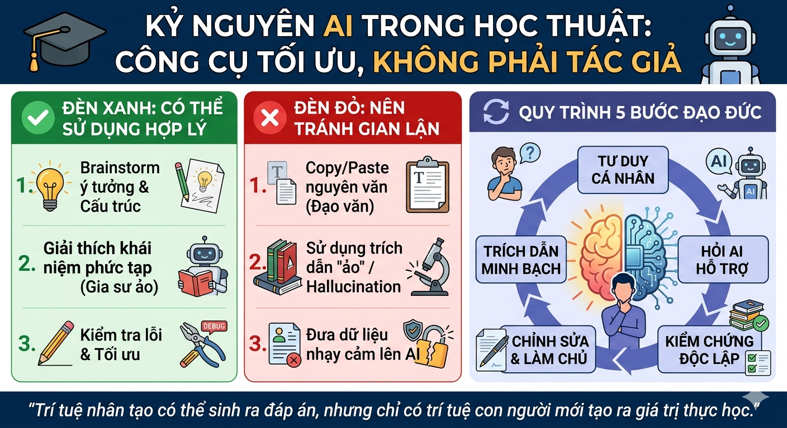

Mục tiêu & Tóm tắt Phát triển kỹ năng sử dụng AI có trách nhiệm và đạo đức trong học tập và nghiên cứu.
Yêu cầu thực hiện:
"Xây dựng một khung đạo đức cá nhân không chỉ giúp bảo vệ liêm chính học thuật mà còn là kim chỉ nam để khai thác tối đa sức mạnh của AI mà không đánh mất năng lực tư duy cốt lõi."
Xem file sản phẩm gốcHiện tại, Trường Đại học Công nghệ (ĐHQGHN) quản lý các vấn đề liêm chính học thuật chủ yếu thông qua Quy chế đào tạo đại học (như Quy chế 3626) và các quy định về công tác sinh viên (Quy định 32/QĐ-ĐHCN). Trọng tâm của các quy chế này là nghiêm cấm mọi hình thức gian lận, mạo danh kết quả và đạo văn (plagiarism) trong thi cử, kiểm tra và làm đồ án.
Mặc dù chưa có một bộ quy tắc hoàn toàn độc lập quy định chi tiết từng cú pháp lệnh được phép dùng với AI tạo sinh, nhưng tinh thần của quy chế đã thiết lập một "lằn ranh đỏ" rõ ràng: Bất kỳ sản phẩm học thuật nào được nộp dưới tên sinh viên phải phản ánh trung thực năng lực và sự nỗ lực tư duy của chính sinh viên đó.
Nhiều trường đại học lớn trên thế giới và tại Việt Nam (như Đại học RMIT) đang áp dụng hệ thống "Đèn giao thông" (Traffic Light System) đối với AI: Đỏ (cấm tuyệt đối trong thi cử truyền thống), Vàng (cho phép dùng để rà soát lỗi, tìm ý tưởng nhưng phải trích dẫn) và Xanh (khuyến khích dùng làm công cụ phân tích dữ liệu).
Đối chiếu với môi trường UET, việc ứng dụng AI có thể được diễn dịch theo hướng cởi mở nhưng có kiểm soát chặt chẽ về đầu ra. Việc cấm đoán sinh viên sử dụng AI là một rào cản phi thực tế, đặc biệt khi năng lực sử dụng AI (AI Literacy) đang trở thành kỹ năng thiết yếu của thế kỷ 21. Chính sách của trường đòi hỏi sinh viên phải chuyển dịch từ năng lực "ghi nhớ thông tin" sang năng lực "đánh giá thông tin". Khi AI sinh ra hàng ngàn dòng code hay văn bản trong vài giây, sinh viên phải đóng vai trò là "Tổng biên tập" – người kiểm chứng tính logic, tính tối ưu và chịu trách nhiệm giải trình tuyệt đối cho sản phẩm cuối cùng.
Nhiệm vụ: Phát triển và lập trình một engine game Tic-Tac-Toe cơ bản bằng C++, trong đó tích hợp một bot AI sử dụng thuật toán Minimax kết hợp kỹ thuật cắt tỉa Alpha-Beta (Alpha-Beta Pruning) để tối ưu hóa không gian duyệt cây trò chơi.
minimax(node, depth, alpha, beta, maximizingPlayer) và giải thích điều kiện cắt tỉa: Nếu beta <= alpha, nhánh đó không cần duyệt tiếp vì trạng thái đó sẽ không bao giờ được người chơi ở nhánh trên lựa chọn.
Kiểm chứng logic: Lý thuyết AI cung cấp là hoàn toàn chuẩn xác so với giáo trình thuật toán. Tuy nhiên, khi phân tích mã giả, tôi nhận thấy AI cố gắng tối ưu hóa việc lưu trữ trạng thái bàn cờ bằng cách gợi ý dùng kỹ thuật dịch bit (bitboards).
Chỉnh sửa: Đối với không gian trạng thái nhỏ như Tic-Tac-Toe (chỉ 3^9 trạng thái tối đa), việc dùng bitboard là phức tạp hóa vấn đề không cần thiết. Tôi quyết định loại bỏ gợi ý này của AI. Tôi tự thiết kế bảng băm bằng mảng 1D đơn giản trong C++ để quản lý trạng thái.
Tích hợp: Toàn bộ cấu trúc thư mục, vòng lặp game chính (game loop), và hàm đánh giá (heuristic) đều do tôi tự viết tay. Dàn ý README của AI được tôi áp dụng, nhưng nội dung bên trong là những phân tích kỹ thuật do tự tôi đúc kết qua quá trình gỡ lỗi (debug).
Trong phần cuối của đồ án, tôi đã trích dẫn: "Nghiên cứu này có sử dụng mô hình Gemini (Google) làm công cụ hỗ trợ tra cứu mã giả của thuật toán cắt tỉa Alpha-Beta và lập dàn ý tài liệu. Quá trình hiện thực hóa bằng C++ và thiết kế logic game được thực hiện độc lập."
Việc áp dụng AI tạo sinh vào môi trường đại học làm dấy lên ba vấn đề đạo đức cốt lõi đòi hỏi sinh viên phải có nhận thức sâu sắc về năng lực thông tin:
Bản chất của giáo dục đại học không nằm ở việc nộp một đoạn code chạy đúng hay một bài luận không sai chính tả, mà là quá trình tư duy để tạo ra chúng. Nếu dùng AI để gỡ rối một vòng lặp bị lặp vô hạn (infinite loop) trong C++, đó là quá trình học tập. Nhưng nếu sao chép nguyên văn hàm Minimax do AI viết sẵn mà không hiểu cách call stack đệ quy hoạt động, đó là hành vi "rút ruột" tri thức. Lằn ranh đạo đức nằm ở năng lực giải trình: Bạn có thể viết lại và bảo vệ đoạn code/luận điểm đó trước hội đồng trong một căn phòng không có Internet hay không?
Các mô hình AI được huấn luyện trên hàng tỷ văn bản, kho lưu trữ mã nguồn mở (như GitHub) và các bài báo khoa học có bản quyền mà tác giả gốc không hề được ghi nhận. Khi sinh viên dùng AI tạo ra nội dung và nhận là của mình, họ đang tham gia vào một quá trình tước đoạt chất xám quy mô lớn. Tệ hơn nữa, hiện tượng "ảo giác" (Hallucination) khiến AI tự bịa ra các thư viện lập trình không tồn tại hoặc các bài báo khoa học giả mạo. Việc đưa các trích dẫn giả này vào bài tập làm suy đồi tính toàn vẹn của hệ thống tri thức.
Đây là rủi ro đạo đức lớn nhất đối với chính bản thân người học. Việc liên tục "khoán trắng" các bài tập khó cho AI sẽ làm teo tóp kỹ năng giải quyết vấn đề, tư duy thuật toán và sự bền bỉ của trí tuệ. Khi bước ra thị trường lao động, đối mặt với các hệ thống phần mềm phức tạp chưa từng có trong bộ nhớ đào tạo của AI, những sinh viên lạm dụng AI sẽ rơi vào trạng thái tê liệt vì đã đánh mất khả năng tự khởi tạo tư duy từ con số 0.
Để làm chủ AI thay vì bị AI làm chủ, tôi xây dựng hệ thống 6 nguyên tắc thực hành cá nhân, viết tắt là C.O.D.I.N.G:
Bắt buộc dành ít nhất 30 phút tự phân tích bài toán, vẽ sơ đồ khối và phác thảo cấu trúc trước khi nhập bất kỳ câu hỏi nào vào AI. AI chỉ dùng để phản biện lại tư duy của tôi, không dùng để bắt đầu tư duy.
Tuyệt đối không sao chép nguyên trạng (copy-paste) output của AI. Bất kỳ đoạn văn bản hay khối mã nguồn nào được tham khảo đều phải được gõ lại, tái cấu trúc và cá nhân hóa theo cách hiểu sâu sắc của bản thân.
Nhận thức rõ môi trường AI là không gian công cộng. Tuyệt đối không tải lên các tài liệu nội bộ, thông tin cá nhân hoặc các mã nguồn của dự án đang trong quá trình bảo mật/nghiên cứu.
Mọi "fact", số liệu, định lý hay thư viện code do AI cung cấp phải được xác minh chéo (cross-check) thông qua ít nhất một nguồn học thuật chính thống hoặc tài liệu đặc tả (documentation) gốc.
AI có thể hỗ trợ tạo ra dữ liệu giả (mock data), dịch ngôn ngữ hoặc tìm lỗi cú pháp (syntax errors), nhưng các thuật toán lõi, logic kinh doanh và lập luận học thuật trọng tâm phải do chính tay tôi tạo ra.
Trung thực ghi nhận sự đóng góp của AI. Chủ động đính kèm một đoạn mô tả (Methodology) ngắn gọn trong các báo cáo, nêu rõ loại AI đã dùng (ví dụ: ChatGPT, Gemini), ngày tháng sử dụng và mục đích cụ thể.

Hành trình học tập trong kỷ nguyên AI không còn là cuộc đua xem ai nhớ nhiều thông tin hơn, mà là ai biết đặt câu hỏi sắc bén hơn và ai có đạo đức dữ liệu vững vàng hơn. Việc tuân thủ liêm chính học thuật không phải là đối phó với các quy chế của nhà trường, mà là sự bảo vệ nghiêm ngặt đối với giá trị cốt lõi của bản thân: năng lực suy nghĩ độc lập. Khai thác AI một cách có trách nhiệm chính là chìa khóa để sinh viên bước vào thế giới nghề nghiệp thực thụ.